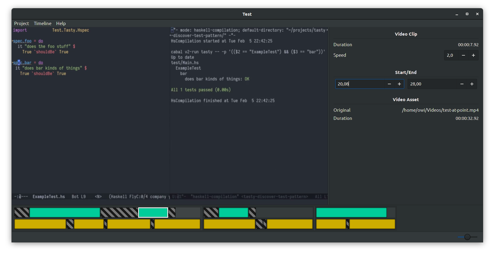

Property-Based Testing the Ugly Parts
Oskar Wickström
May 2019
About Me
- Live in Malmö, Sweden
- Work for Symbiont
- Blog at wickstrom.tech
- Maintain some open source projects
- Haskell at Work screencasts
- Spent the last year writing a screencast video editor called Komposition
Agenda
- Introduction to Hedgehog
- Property-Based Testing for the Industry Programmer
- Case Studies from Komposition
Introduction to Hedgehog
Hedgehog
- Random generated inputs
- Integrated shrinking
- Great error reporting
- Concurrent test execution
- Generators as values
List Reverse with Hedgehog
prop_reverse = property $ do
xs <- forAll $
Gen.list
(Range.linear 0 10)
(Gen.int Range.linearBounded)
reverse (reverse xs) === xs
List Sort with Hedgehog
prop_sort = property $ do
xs <- forAll $
Gen.list
(Range.linear 0 10)
(Gen.int Range.linearBounded)
mySuperSort xs === industryStandardSort xs
Failures
Poll
How many of you write sort algorithms in your day job?
How do I use this in my job?
- What if you’re working with:
- Backends with databases and integrations?
- Frontends with GUIs and user input?
- Data pipelines and analytics?
- Hard to write properties
- Fewer examples online
Property-Based Testing for the Industry Programmer
Testing the “Ugly” Parts
- Not everything will be small pure functions
- Complex interactions between larger modules
- Stateful
- Side-effects
Designing for Testability
- Regular “writing testable code” guidelines apply:
- Single responsibility
- Determinism
- No global side-effects
- Low coupling between interface and implementation
Coming Up With Properties
- “Choosing properties for property-based testing” by Scott Wlaschin
- “Different paths, same destination”
- “There and back again”
- “Some things never change”
- “The more things change, the more they stay the same”
- “Solve a smaller problem first”
- “Hard to prove, easy to verify”
- “The test oracle”
- Study others’ property tests
- Practice!
Other Interesting Techniques
- State-machine testing
- “Database of inputs”
Case Studies from Komposition
Komposition
|
 |
Complex Features
- Most complex features in Komposition
- Focus and timeline transformations
- Video classification
- Rendering
- Application logic
- Spend effort on testing those
Case Studies
- Timeline Flattening
- Video Scene Classification
- Integration Tests (Undo/Redo Symmetry)
Hierarchical Timeline
Clips

Video Still Frames
Adding Gaps
Sequences

Timeline
Case Study 1: Timeline Flattening
Timeline Flattening
- Timeline is hierarchical
- Sequences
- Parallels
- Tracks
- Clips and gaps
- FFmpeg render knows only about two flat tracks
- Video track
- Audio track
Timeline Flattening (Graphical)

Testing Duration
hprop_flat_timeline_has_same_duration_as_hierarchical =
property $ do
t <- forAll $ Gen.timeline (Range.exponential 0 20) Gen.parallelWithClips
let Just flat = Render.flattenTimeline t
durationOf AdjustedDuration t === durationOf AdjustedDuration flatTesting Clip Occurence
hprop_flat_timeline_has_same_clips_as_hierarchical =
property $ do
t <- forAll $ Gen.timeline (Range.exponential 0 20) Gen.parallelWithClips
let Just flat = Render.flattenTimeline t
timelineVideoClips t === flatVideoClips flat
timelineAudioClips t === flatAudioClips flatMore on Timeline Flattening
- Other properties
- How video gaps are padded with still frames
- Same flat result regardless of grouping (split/join sequences, then flatten)
Case Study 2: Video Scene Classification
Video Scene Classification
- Komposition can automatically classify “scenes”
- Moving segment: consecutive non-equal frames
- Still segment: at least S seconds of consecutive near-equal frames
- S is a preconfigured threshold for still segment duration
- Edge cases:
- First segment is always a moving segment
- Last segment may be shorter
Visualizing with Color Tinting

Testing Video Classification
- Generate high-level representation of expected output segments:

- Convert output representation to actual pixel frames:
- Run the classifier on the pixel frames
- Test properties based on:
- the expected output representation
- the actual classified output

Two Properties of Video Classification
- Classified still segments must be at least S seconds long
- Ignoring the last segment (which may be a shorter still segment)
- Classified moving segments must have correct timespans
- Comparing the generated expected output to the classified timespans
Testing Still Segment Lengths
hprop_classifies_still_segments_of_min_length = property $ do
-- 1. Generate a minimum still segment length/duration
minStillSegmentFrames <- forAll $ Gen.int (Range.linear 2 (2 * frameRate))
let minStillSegmentTime = frameCountDuration minStillSegmentFrames
-- 2. Generate output segments
segments <- forAll $
genSegments (Range.linear 1 10)
(Range.linear 1
(minStillSegmentFrames * 2))
(Range.linear minStillSegmentFrames
(minStillSegmentFrames * 2))
resolutionTesting Still Segment Lengths (cont.)
...
-- 3. Convert test segments to actual pixel frames
let pixelFrames = testSegmentsToPixelFrames segments
-- 4. Run the classifier on the pixel frames
let counted = classifyMovement minStillSegmentTime (Pipes.each pixelFrames)
& Pipes.toList
& countSegments
...Testing Still Segment Lengths (cont.)
...
-- 5. Sanity check
countTestSegmentFrames segments === totalClassifiedFrames counted
-- 6. Ignore last segment and verify all other segments
case initMay counted of
Just rest ->
traverse_ (assertStillLengthAtLeast minStillSegmentTime) rest
Nothing -> success
where
resolution = 10 :. 10Success!
> :{
| hprop_classifies_still_segments_of_min_length
| & Hedgehog.withTests 10000
| & Hedgehog.check
| :}
✓ <interactive> passed 10000 tests.Testing Moving Segment Timespans
hprop_classifies_same_scenes_as_input = property $ do
-- 1. Generate a minimum still still segment duration
minStillSegmentFrames <- forAll $ Gen.int (Range.linear 2 (2 * frameRate))
let minStillSegmentTime = frameCountDuration minStillSegmentFrames
-- 2. Generate test segments
segments <- forAll $
genSegments (Range.linear 1 10)
(Range.linear 1
(minStillSegmentFrames * 2))
(Range.linear minStillSegmentFrames
(minStillSegmentFrames * 2))
resolution
...Testing Moving Segment Timespans (cont.)
...
-- 3. Convert test segments to actual pixel frames
let pixelFrames = testSegmentsToPixelFrames segments
-- 4. Convert expected output segments to a list of expected time spans
-- and the full duration
let durations = map segmentWithDuration segments
expectedSegments = movingSceneTimeSpans durations
fullDuration = foldMap unwrapSegment durations
...Testing Moving Segment Timespans (cont.)
...
-- 5. Classify movement of frames
let classifiedFrames =
Pipes.each pixelFrames
& classifyMovement minStillSegmentTime
& Pipes.toList
-- 6. Classify moving scene time spans
let classified =
(Pipes.each classifiedFrames
& classifyMovingScenes fullDuration)
>-> Pipes.drain
& Pipes.runEffect
& runIdentity
...Testing Moving Segment Timespans (cont.)
...
-- 7. Check classified time span equivalence
expectedSegments === classified
where
resolution = 10 :. 10Failure!

Classifier Bugs
classifyMovement minStillSegmentTime =
case ... of
InStillState{..} ->
if someDiff > minEqualTimeForStill
then ...
else ...
InMovingState{..} ->
if someOtherDiff >= minStillSegmentTime
then ...
else ...
where
minEqualTimeForStill = 0.5Fixing Bugs
- There were multiple bugs:
- The specificiation was wrong
- The generators and tests had errors
- The implementation had errors
- After fixing bugs, thousands of tests ran successfully
- Tried importing actual recorded video, had great results!
Case Study 3: Integration Testing
Undo/Redo Symmetry
- Undo/Redo was previously implemented as stacks of previous/future states
- Consumed gigabytes of disk space and RAM for projects with many edits
- Rewrote the implementation to only store “invertible actions”
Testing Undo
- Generate an initial state
- Generate a sequence of undoable commands
- Run all commands
- Run undo command for each original command
- Assert that we end up at the initial state
Actions are Undoable
hprop_undo_actions_are_undoable = property $ do
-- Generate initial timeline and focus
timelineAndFocus <- forAllWith showTimelineAndFocus $
Gen.timelineWithFocus (Range.linear 0 10) Gen.parallel
-- Generate initial application state
initialState <- forAll (initializeState timelineAndFocus)
-- Generate a sequence of undoable/redoable commands
events <- forAll $
Gen.list (Range.exponential 1 100) genUndoableTimelineEvent
...Actions are Undoable (cont.)
...
-- We begin by running 'events' on the original state
beforeUndos <- runTimelineStubbedWithExit events initialState
-- Then we run as many undo commands as undoable commands
afterUndos <- runTimelineStubbedWithExit (undoEvent <$ events) beforeUndos
-- That should result in a timeline equal to the one we at the
-- beginning
timelineToTree (initialState ^. currentTimeline)
=== timelineToTree (afterUndos ^. currentTimeline)Testing Redo
- Generate an initial state
- Generate a sequence of undoable/redoable commands
- Run all commands
- Run undo and redo commands for each original command
- Assert that we end up at the state before running undos
Actions are Redoable
hprop_undo_actions_are_redoable = property $ do
-- Generate the initial timeline and focus
timelineAndFocus <- forAllWith showTimelineAndFocus $
Gen.timelineWithFocus (Range.linear 0 10) Gen.parallel
-- Generate the initial application state
initialState <- forAll (initializeState timelineAndFocus)
-- Generate a sequence of undoable/redoable commands
events <- forAll $
Gen.list (Range.exponential 1 100) genUndoableTimelineEventActions are Redoable (cont.)
-- We begin by running 'events' on the original state
beforeUndos <- runTimelineStubbedWithExit events initialState
-- Then we undo and redo all of them
afterRedos <-
runTimelineStubbedWithExit (undoEvent <$ events) beforeUndos
>>= runTimelineStubbedWithExit (redoEvent <$ events)
-- That should result in a timeline equal to the one we had before
-- starting the undos
timelineToTree (beforeUndos ^. currentTimeline)
=== timelineToTree (afterRedos ^. currentTimeline)Undo/Redo Test Summary
- These tests made the refactoring possible
- Founds many interim bugs
- Off-by-one index
- Inconsistent focus
- Non-invertible actions
- After the tests passed: ran the GUI, it worked
Related Tests
- Focus and Timeline Consistency
- The focus is a data structure that “points” to a part of the timeline
- The timeline and focus must at all points be consistent
- Approach:
- Generate a random initial state
- Generate a random sequence of user commands
- Check consistency after each command
- Run all commands until termination
Wrapping Up
Summary
- Property-based testing is not only for pure functions!
- Effectful actions
- Integration tests
- Process (iterative)
- Think about the specification first
- Think about how generators and tests should work
- Get minimal examples of failures, fix the implementation
- Using them in Komposition:
- Made refactoring and evolving large parts of the system tractable and safer
- Found existing errors in my thinking, my tests, my implementation
- It’s been a joy
References
- What is Property Based Testing? by David R. MacIver
- Experiences with QuickCheck: Testing the Hard Stuff and Staying Sane by John Hughes
- “Choosing properties for property-based testing” by Scott Wlaschin
Thank You!
- “Property-Based Testing in a Screencast Editor” series:
- Komposition: owickstrom.github.io/komposition/
- Slides: owickstrom.github.io/property-based-testing-the-ugly-parts/
- Thanks to John Hughes for feedback
- Image credits: